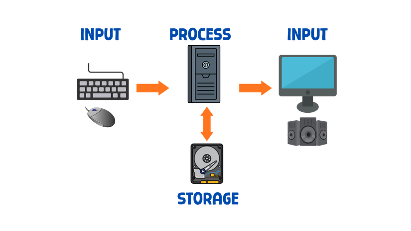
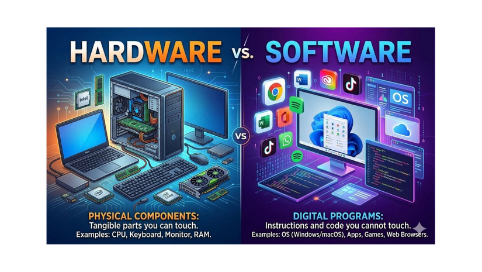

What Is a Computer System?
What Is a Computer System?
A computer system is more than just a box with a screen. It is a complete working setup made of parts that cooperate with each other. When all the parts work together, the system can take in information, work on it, remember it, and show the results.
Definition: A computer system is a combination of hardware and software that works together to accept data (input), process it into useful information, store it, and output the results.
Two things make this definition important. First, a computer system is not only the physical machine — it also includes the programs that tell the machine what to do. Second, every computer system, no matter how simple or complex, performs the same four basic jobs: input, process, storage, and output.
Why This Definition Matters
When you understand what a computer system is, you can look at any device — a smartphone, a smart TV, or even an ATM — and see the same pattern. Each one has physical parts, each one runs programs, and each one takes in data, works on it, keeps it, and gives something back. This pattern is the foundation of everything else you will learn in this unit.
Examples You Already Know
You have already used many computer systems today. A smartphone is a computer system. A laptop is a computer system. Even a smart TV or an ATM is a computer system. They all follow the same four functions — they just look different and are used for different things.
- Computer
- A device that can follow instructions stored in its memory.
- Computer System
- A combination of hardware and software that can be programmed to perform a variety of tasks.
- Hardware
- The physical parts of a computer system that you can see and touch.
- Software
- The programs and instructions used to control the computer and perform specific tasks.
The Four Main Functions
Every computer system — from the smallest smartwatch to the most powerful supercomputer — performs four main functions. These four jobs happen in a cycle, and understanding them is the key to understanding how computers work.
1. Input
Receiving data and instructions from the user or another device.
2. Process
Working with data — calculating, comparing, sorting, and transforming it.
3. Storage
Keeping data and instructions for later use — temporarily or permanently.
4. Output
Presenting the results of processing in a useful form.
1. Input — Receiving Data
Input is the first step. It means the computer receives data and instructions. This happens when you type on a keyboard, tap a touchscreen, speak into a microphone, scan a barcode, or click a mouse. Every action you take to tell the computer something is an input.
Examples of input: typing a message, pressing a button on a game controller, taking a photo, using a fingerprint scanner, or saying "Hey Siri" to your phone.
2. Process — Working With Data
Process is where the real work happens. The computer takes the data it received and works on it. It might calculate, compare, sort, organize, or change the data in some way. The main part responsible for processing is the CPU (Central Processing Unit) — often called the "brain" of the computer.
Examples of process: a calculator adding numbers, a game deciding whether your character hit an enemy, or a weather app combining temperature and wind data to show a forecast.
3. Storage — Keeping Data
Storage means saving data and instructions so they can be used later. There are two main kinds of storage:
- Temporary storage (RAM): Holds data only while the computer is on. When you turn it off, this data disappears.
- Permanent storage (hard drive, SSD, cloud): Keeps data even after the computer is turned off. This is where your files, photos, and programs live.
Without storage, you would lose everything the moment you closed an app. Storage is what lets you save a document, take a photo, and come back to it later.
4. Output — Presenting Results
Output is the final step. It is how the computer shows you the results of its processing. Output can be something you see, hear, or even feel.
Examples of output: text on a screen, sound from speakers, a printed page, vibration on a phone, or a light turning on.
Analogy: Think of a chef in a kitchen. The chef receives ingredients (input). The chef cooks the food (process). The chef stores extra ingredients in the fridge (storage). Finally, the chef serves the dish to you (output). A computer system works in exactly the same way!

Figure 1.1 — The four main functions of a computer system.
Hardware vs. Software
A computer system is made of two essential parts: hardware and software. These two parts are not separate — they depend on each other. Hardware cannot do anything useful without software, and software cannot run without hardware. They are like two halves of the same whole.
Hardware
- Physical parts you can touch and see
- CPU, RAM, motherboard, hard drive
- Keyboard, mouse, monitor, printer
- Wears out over time
- You can hold it in your hand
Software
- Programs and instructions
- Operating systems (Windows, Android)
- Applications (browser, games, Word)
- Can be updated or reinstalled
- You cannot touch it — only use it
Hardware — The Physical Parts
Hardware is everything you can physically touch. If you can pick it up, plug it in, or drop it, it is hardware. Inside a computer you will find the processor, memory, motherboard, and storage drives. Outside you will find the keyboard, mouse, monitor, and printer. All of these are hardware.
Software — The Programs and Instructions
Software is the set of instructions that tells the hardware what to do. You cannot touch software — you can only see what it does. When you open a web browser, play a game, or type a document, software is running and giving the hardware its orders.
Two Types of Software
Software is usually divided into two groups:
- System software: This runs the computer itself. The most important example is the operating system, such as Windows, macOS, or Android. It manages the hardware, runs other programs, and keeps everything working together.
- Application software: These are the programs you use to do specific tasks, such as writing a document, browsing the internet, editing a photo, or playing a game. Microsoft Word, Google Chrome, and Minecraft are all application software.
They Need Each Other
Think of it this way: hardware is like a musical instrument, and software is like the sheet music. The instrument alone cannot play a song, and the sheet music cannot play itself. Only when both are together does the music happen. The same is true for a computer system — hardware and software must work together.

Figure 1.2 — Comparing hardware and software.
Examples of Computer Systems
Computer systems come in many different shapes and sizes. They do not always look like the desktop computers you see in a computer lab. In fact, you probably carry one in your pocket every day. No matter how different they look, every one of them still performs the same four functions.
Desktop Computer
A desktop is the traditional computer system. It usually has a separate monitor, keyboard, and mouse. It is often more powerful than other types and is easier to upgrade and repair. It is used in offices, schools, and homes.
Laptop
A laptop is a computer system with the monitor, keyboard, and mouse built into one unit. It is designed to be portable, which means you can carry it with you and use it almost anywhere. It runs on a battery when it is not plugged in.
Tablet
A tablet is a computer system that uses a touchscreen instead of a physical keyboard and mouse. It is thinner and lighter than a laptop, making it easy to hold and carry. Tablets are often used for reading, drawing, and watching videos.
Smartphone
A smartphone is a small computer system that fits in your pocket. It can make calls, send messages, take photos, browse the internet, play games, and run thousands of different apps. It is the most common computer system in the world today.
Smart TV
A smart TV is a television that connects to the internet and can run apps. It can stream movies, play games, and browse the web. Even though it looks like a TV, it is a full computer system inside.
ATM (Automated Teller Machine)
An ATM is a computer system that lets people withdraw money, check balances, and make deposits. It has a card reader (input), a computer (process), a database connection (storage), and a screen and cash dispenser (output). It is a great example of a computer system that solves a real-world problem.
Think about it: A desktop, laptop, tablet, smartphone, smart TV, and ATM all look very different — but they all take input, process it, store it, and produce output. Understanding this pattern helps you understand any computer system you meet.

Figure 1.3 — Different types of computer systems.
Activity: Computer Systems I Used Today
Your Task
Think about all the computer systems you have used today — from the moment you woke up to right now. List at least three of them in the table below and identify the input, process, storage, and output for each one.
- Write the name of the computer system in the first column.
- Identify what data goes in (input).
- Describe what the system does with that data (process).
- Explain what it keeps for later (storage).
- Describe what it shows or produces (output).
Fill in the table:
| Computer System | Input | Process | Storage | Output |
|---|---|---|---|---|
Quick Check
Test your understanding with these questions. Click the best answer.
1. Which of the following is the correct order of the four main functions?
2. Which of the following is an example of hardware?
3. What is the main job of the process function?
Teacher Instructions
ZipGrade Quiz — Don't forget to take the ZipGrade quiz! Use the link provided to access and complete it. Make sure to submit before the deadline.